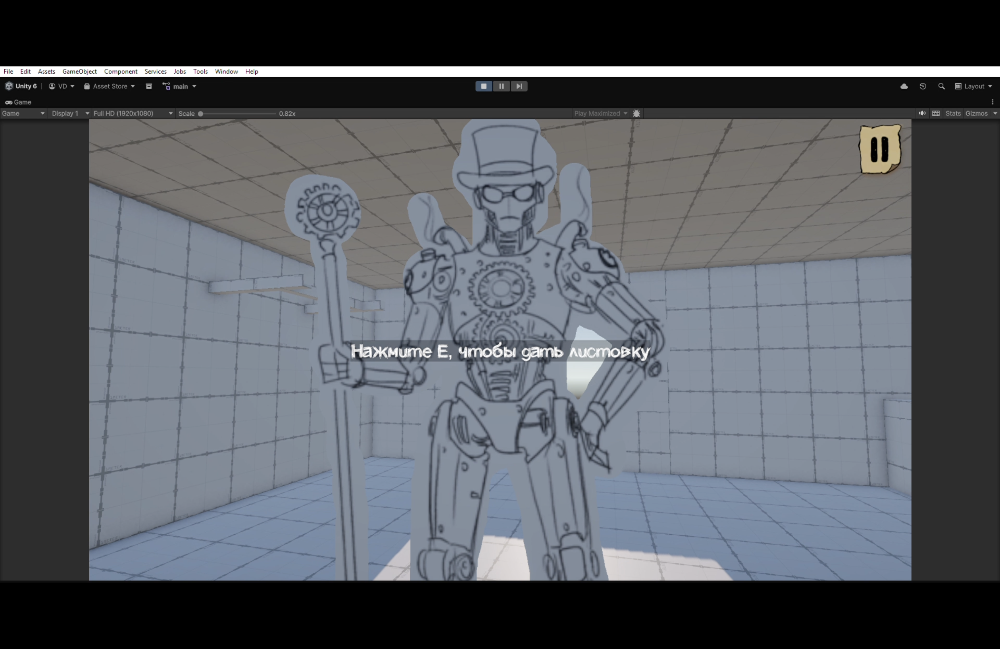
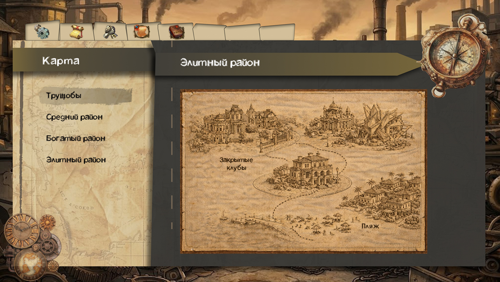
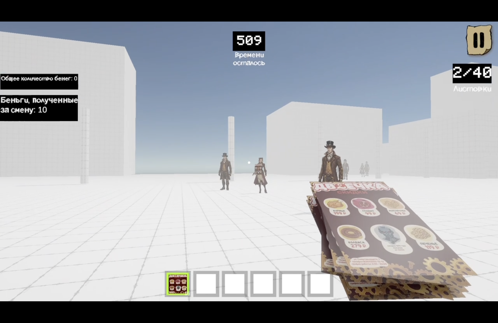
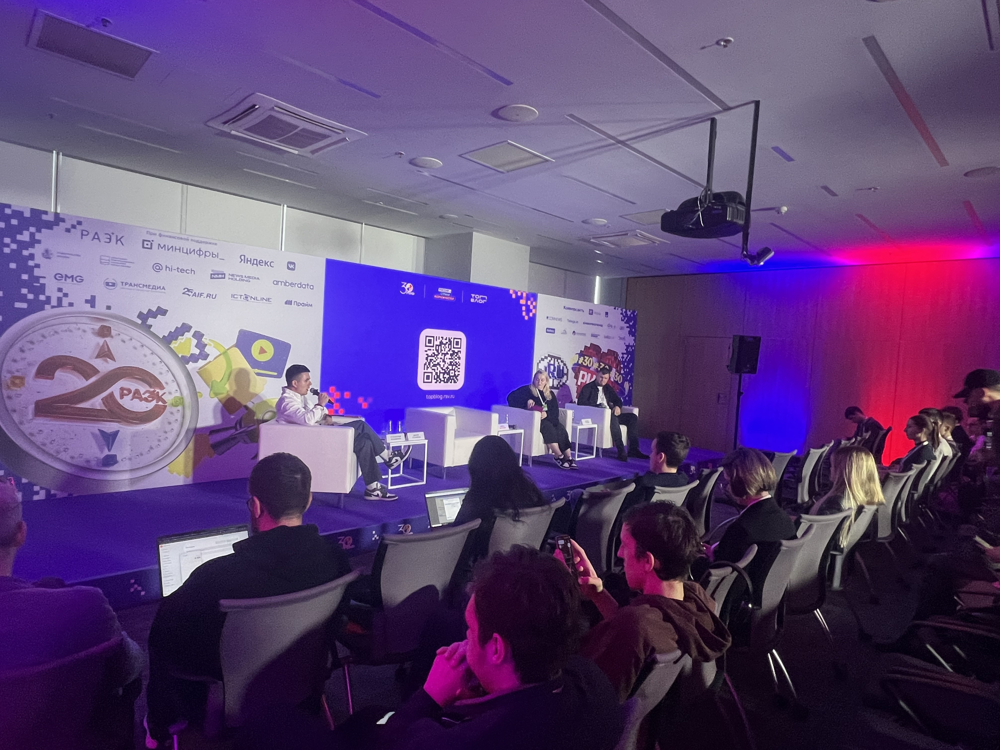

Журнал разработки
📅 15 марта 2026 — Первые шаги: окружение, NPC и диалоги

Мы начали разработку! На этом скриншоте — одна из первых версий игры. Уже появились первые наброски окружения, прототипы NPC и базовая диалоговая система. Игрок может подходить к прохожим и пробовать разные варианты ответов. Впереди много работы, но первый шаг сделан.
📅 10 апреля 2026 — Интерфейс игры и карта «Трущобы»

Много времени уделили интерфейсу: он должен быть удобным, атмосферным и не перегружать игрока. На скриншоте — карта локации «Трущобы», которая будет доступна в меню. Здесь игрок сможет выбирать, куда отправиться в следующий игровой день. Дизайн выполнен в нуарном стиле с элементами Mixed Media.
📅 28 апреля 2026 — Новые механики, диалоги и NPC

Мы очень много работали над игрой! Добавили механику броска листовки — теперь можно не только вежливо предлагать, но и бросать их на расстоянии. Глубоко проработали диалоговую систему: у NPC появились разные характеры и реакции. Отрисовали много новых персонажей и листовок. И это только то, что видно на скрине — многое остаётся за кадром, но очень многое сделано. Игра оживает!
📅 29 апреля 2026 — Посещение Российского Интернет-Форума (РИФ)

Посетил 30-й Российский Интернет-Форум в Технопарке «Сколково». Впечатлили сессии про поколение Z, социальные лифты и UGC. Полученные идеи предложил команде проекта «Симулятор раздачи листовок» — особенно по диалоговой системе и продвижению. Полный отчёт — в разделе docs/partner_report.md.